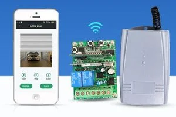

1. The problem with keyfobs
The standard remote control for an auto gate is a keyfob — a small RF transmitter that sends a signal to the motor receiver when you press the button. They work, they are reliable, and almost every motorised gate in Singapore uses them.
They also have three persistent problems that most homeowners have learned to live with:
- Battery failure at the worst moment. Keyfobs run on small batteries that die without warning.
- Physical damage and loss. Keyfobs get dropped, washed, or lost, creating recurring replacement costs.
- Frequency conflicts. In dense housing, fobs can inadvertently trigger neighbors' gates.
WiFi control resolves all three. Your smartphone becomes the remote, it works from anywhere with an internet connection, and the security is handled by an encrypted app account rather than a shared radio frequency.
2. How the WiFi receiver works
The upgrade does not touch the gate motor. It adds a small WiFi receiver module — the YET402 is the unit we typically install — into the existing motor control panel. Both systems run in parallel: your existing keyfobs continue to work as before, and the WiFi app provides an additional control layer.
The YET402 is a dual-channel receiver small enough to fit inside the motor housing. It connects to your home WiFi and pairs with the Tuya Smart app. Installation typically takes 30 to 45 minutes.

YET402 WiFi 2-channel receiver module.
3. What you can do from the app
Once the YET402 is installed, you can:
- Open and close from anywhere — inside the house, in the car, or even overseas.
- Share access with family — add multiple users to the device via the app.
- Set timers — automatically close the gate at 11pm if it was left open.
- Check status — see if the gate is open or closed without looking outside.
- Grant temporary access — open the gate for delivery drivers or contractors remotely.
4. What you need for the installation
The installation requires three basic things:
- A working motorised gate. The upgrade adds to an existing system; it does not repair a faulty motor.
- Home WiFi coverage at the gate. The unit must reach your router. If signal is weak, a WiFi extender may be needed.
- A smartphone with the Tuya app. Available for free on iOS and Android.
The existing keyfobs continue to work after the upgrade. The WiFi module is an addition, not a replacement. You do not need to choose between them.
5. Security considerations
What if someone hacks the app? The Tuya platform uses encrypted communication. Use a strong password and enable two-factor authentication to maintain account hygiene.
What if the internet goes down? If your home internet fails, app control stops working. However, physical keyfobs continue to work independently of the internet. You are never locked out.
6. Is this the right upgrade for your situation?
WiFi gate control makes most sense if you frequently open the gate for others when not home, or if you want to eliminate keyfob issues. It's a low-cost, high-impact convenience improvement common in modern Singapore homes.
SECUREVISION VIEW: This is our most straightforward upgrade. Hardware cost is low, installation is quick, and the convenience is immediate. Just ensure you have solid WiFi signal at the gate before starting.

Ler Wee Meng
Securevision holds Police Licence No. L/PS/000267/2023P and is registered with the Building and Construction Authority of Singapore.